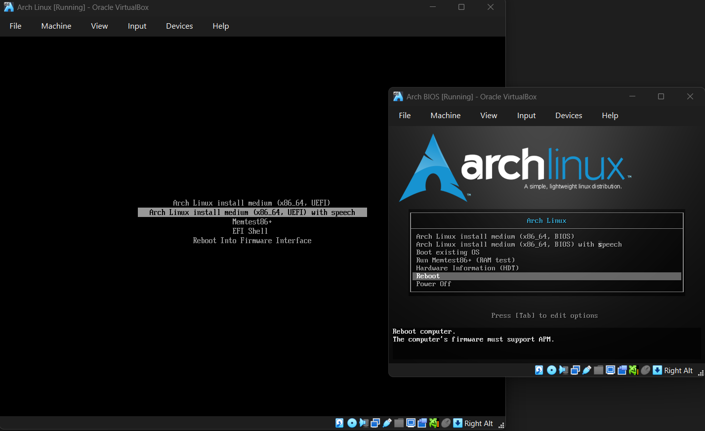
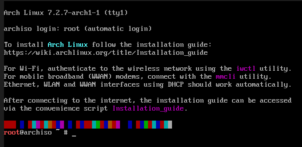
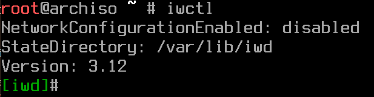
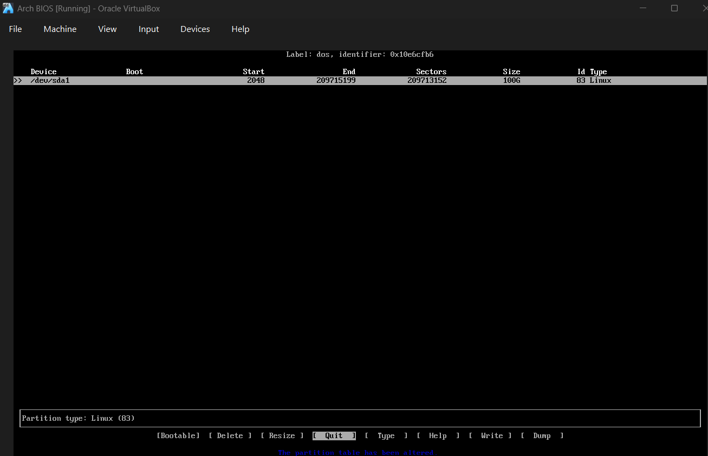
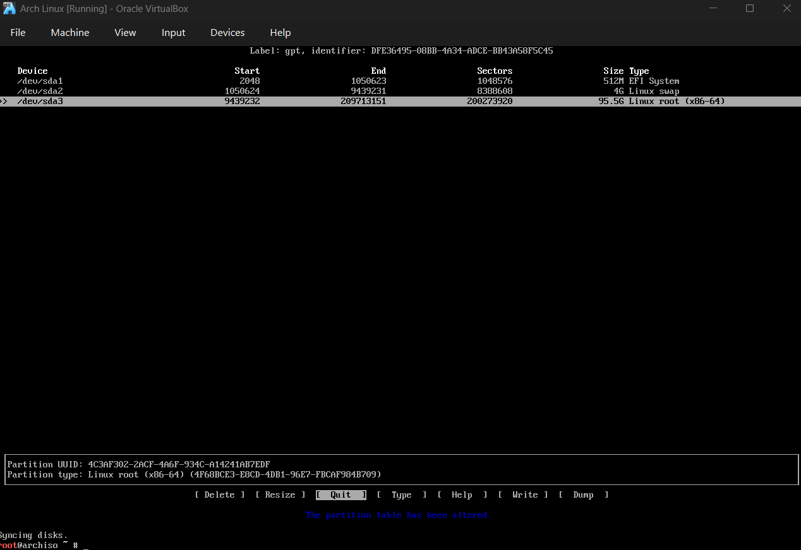
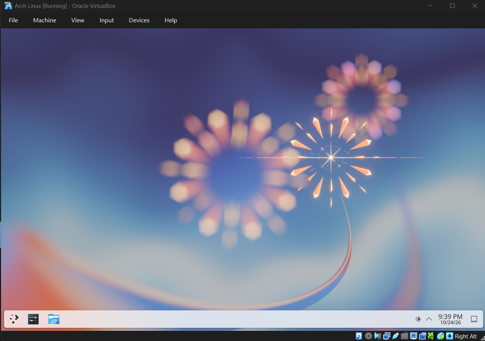

How to Install Arch Linux
Guide is meant to provide a simplified, beginner-friendly walkthrough of manually installing Arch Linux and installing the KDE Plasma Desktop Environment
What the guide covers
- Beginner-Friendly: I will try my best to explain any commands without any of the usual dense jargon that the less tech-inclined won't really understand.
- KDE Plasma: A customizable desktop environment that feels familiar to Windows users.
- Hardware: Drivers and configs meant mainly for AMD GPUs and VirtualBox environments (Nvidia likes to keep drivers closed-source)
- Standard Architecture: Arch is pretty much only designed for x86-64 (AMD64) architecture, so no ARM or RISC-V unfortunately.
Install Path
Option 1: Bare Metal (Real Hardware)
If you've decided to completely forsake Windows or are distro hopping, here's what you'll need to get started:
- A USB Flash Drive (Probably 4GB Minimum, the ISO as of October 2026 is around 1.53 GB though)
- The latest Arch Linux ISO file (Which you can download from here, just scroll to HTTP Direct Downloads and pick a mirror closest to where you live for fast download speeds.)
- An Image Flashing utility to make your bootable drive, such as BalenaEtcher, Rufus, or Raspberry Pi Imager (Yes that is a valid image flashing utility software)
- Reading Comprehension
Getting Started: Download the ISO from that link. Flash the image to your USB using your image flashing util, look up your computer's boot menu shortcut key, then restart your computer and repeatedly press that boot menu key to then select your USB and boot into the installer.
Option 2: Virtual Machine
If you're installing Arch into a Virtual Environment, you need the following:
- The latest Arch Linux ISO file (Which you can download from here, just scroll to HTTP Direct Downloads and pick a mirror closest to where you live for fast download speeds.)
- Some virtualization software of choice, whether that be Oracle VirtualBox (Which aside from the extension pack is FOSS), VMWare Workstation Pro, QEMU, any virtualization software should work as long as you know how to set up a virtual machine in that app (This guide is meant to guide you on installing Arch, not Virtualization software)
- Reading Comprehension
Getting Started with Arch
Once you've restarted your computer and booted to the USB, or ran your VM with the ISO file, you should see one of these two screens.

You'll notice that the window on the left mentions UEFI, while the smaller window on the right mentions BIOS. BIOS is an older standard that was the industry standard for about 30 years, and also considered old, around the release of Windows 8, UEFI became widespread, and practically every modern computer runs on UEFI. The steps should be relatively similar though.
I will mainly be targetting UEFI, so if I mention any BIOS exclusive steps and you're using BIOS, then you should follow those rather than EFI specific steps.

Once you select your option, which is typically the top-most one, and will automatically pick that unless you move your cursor, you will see something along the lines of this.
This is a Command Line Interface, or CLI for short, CLIs are pretty much just typing text and pressing the enter/return key. You may find the text is a little small, so you could type in
setfont ter-132bNow, there is an easy way out in using
archinstallInternet
One of the first things you may have to do is set up internet, because yes we download from the internet. If you're using a Virtual Machine, or your device is plugged into Ethernet, you should be able to skip this step. But if you aren't hooked up to Ethernet, you'll need to run the following lines of code:
iwctlRunning iwctl will put you into a new environment of sorts shown below.

Next up you'll want to run the following:
device listThe above command will show any and all network devices you could use. With Ethernet, it will show nothing, which means you will want to skip that section as it's not needed to try and set up Internet for something that already has it.
Next up would be saving possible networks to cache and loading that cache, which is impossible for me as via guiding through VirtualBox means Arch for me gets treated as having Ethernet connected. But it should be something along the lines of:
station wlan0 scan
station wlan0 get-networksThis should show you all potential networks available. You'll want to find your network and then run the following, with the SSID portion being replaced by your network's SSID (It may also require a passphrase, this should just be your Wi-Fi password):
station wlan0 connect <SSID>Once you're done with the network stuff, you can either type exit into the CLI interface, or press CTRL+C
To ensure it works, I recommend checking you have a connection by running:
ping -c 3 google.comThis basically just tries to see if you can get a response from Google's servers, if it pings google.com 3 times saying 64 bytes each time, that's good!
Partitions
Partitioning is where your storage drive is split into usable sections. This is where there is a major difference between a BIOS system and a UEFI system.
First though we'll run a command to check our drive's name, we can ignore sr0 and loop, but we will run the following:
lsblkTypically your drive will either be listed as nvme0n1 or sda depending on your drive type, NVMe SSDs will use the former, while pretty much everything will be the latter. This is your drive name
With that, we know what we will be targetting in terms of your storage drive. Next up is to run this:
cfdisk /dev/<driveName>Now, in the above code, you'll want to replace <driveName> with the drive name you found, if it has other partitions, don't worry, those will get deleted, which is likely the case for Windows as it uses NTFS partitioning.
With that, now it's time for the difference between BIOS and UEFI in the partition scheme. Make sure to look at the subsection that your computer is, which you should remember from the beginning.
Before we go into the BIOS/UEFI specific sections for partitioning, cfdisk is a Text User Interface based partitioning software, where you use arrow keys and enter.
For BIOS Systems
With your BIOS system, you'll want to select the DOS partition, oftentimes it's known as the MBR partition.
You should be able to proceed with the below image as an example of a BIOS partition, though the size should be your full drive, whereas I am using Virtual Machines with a max size of 100GB, unless you're using a 2TB drive which BIOS has a max storage capacity of 2TB

You'll notice that the type is Linux, this is good. After this is done, make your way to the write section, type out yes, then press enter, then press quitAfter that, you'll need to initialize this, for the sake of simplicity, we will make the partition type ext4. The partition should be something along the lines of nvme0n1p1 or sda1.
To make it be of type ext4, we will run the following:
mkfs.ext4 /dev/<driveNameP1>I am using driveName as a standin for either your nvme0n1 or sda drive with PNum either being p1 or 1 for the respective drive names.
After formatting that partition, you want to mount the file system, which would be:
mount /dev/<driveNameP1> /mntFor UEFI Systems
With your UEFI system, you'll want to select the GPT partition
You'll need a bit more than the BIOS section, as UEFI needs its own partition
Your first partition in UEFI will have a size of 512 Megabytes (Written in as 512M), which afterwards you'll want to change to EFI Filesystem via the type button.
Your next one could be a swap partition, which is basically backup RAM on your storage drive, it's recommended to have 4 GB swap space, that or the amount equal to the amount of RAM you have. We'll just set up 4 GB, which will be set to Linux Swap.
Lastly, your final partition should be the rest of your drive's storage, you'll want to set it to Linux root (x86_64)
After that's done, you should have something that looks like this, though should be different depending on the sizes you picked.

With this, you'll want to run the following, for the sake of simplicity for myself, I'll use the example of <driveNameP#>, if you're using an NVMe drive, your partitions will look like nvme0n1p1, nvme0n1p2, and nvme0n1p3, for others it should be sda1, sda2, and sda3. We run the following commands:
mkfs.fat -F 32 /dev/<driveNameP1>
mkswap /dev/<driveNameP2>
mkfs.ext4 /dev/<driveNameP3>With this, you've now got your partitions formatted, and can now mount them with:
mount /dev/<driveNameP3> /mnt
mount --mkdir /dev/<driveNameP1> /mnt/bootWe essentially make a shortcut to /dev/<driveNameP3> to /mnt with this command, and the --mkdir flag makes a new folder called /boot.
It's also recommended to enable your swap with the following line of code:
swapon /dev/<driveNameP2>Base System and Chroot
With our partition(s) formatted and mounted, we're now ready to install the core aspects of Linux onto the drive. This process does pull files straight from the internet
Step 1: Installing the Basic System
You'll want to run pacstrap to install the base system, the Linux kernel, essential hardware firmware (linux-firmware and amd-ucode or intel-ucode), a text editor, and network management. You could replace nano with vim, but I recommend nano for beginners, it's fairly easy to get stuck in vim, we don't want that.
pacstrap -K /mnt base linux linux-firmware amd-ucode nano networkmanagerNote: If you're practicing this inside a Virtual Environment like VirtualBox or using Intel instead, you can either remove amd-ucode (VirtualBox) or replace it with intel-ucode (Intel), this microcode must be loaded by our bootloader, which for this guide will be GRUB, will be loaded before the linux kernel starts.
Step 2: Generating a filesystem table
Next in our installation process, we need to make a filesystem table, often abbreviated to fstab. This file tells your computer precisely how and where to mount your drive partitions automatically every time it boots. We set it up with:
genfstab -U /mnt >> /mnt/etc/fstabStep 3: Entering the Chroot Environment
Right now, your commands are running on the live USB installer environment. To configure your new operating system, we'll need to "Change Root" (Chroot) into the mounted drive. It switches your terminal's context so that you're working directly inside your new Arch Installation:
arch-chroot /mntYou should notice now that the root text went from red to white, you're now officially inside your new system, ready for configuration.
System Configuration
Now that we're inside our new install, we need to configure core system settings.
Step 1: Time Zone and Hardware Clock
Firstly, you'll want to link your system's region config to your local time zone. This example uses New York, but you can swap it for your regional director (such as America/Los_Angeles or Europe/London):
ln -sf /usr/share/zoneinfo/America/New_YorkNext up, sync your motherboard's hardware clock directly with your system's new time zone settings:
hwclock --systohcStep 2: Localization
We need to tell Arch what languages and character formats it should support (Don't try and remove the french language pack). We're going to open the locale generator config file using that nano text editor:
nano /etc/locale.genNano is another TUI app, moving on lines is done via the arrow keys, and any text is added before the character your cursor is currently on.
How to edit this particular file in Nano:
- Scroll down the file with the down key until you find a line that has the locale you want, in my case, this would be
#en_US.UTF-8 UTF-8 - Go to the letter after the (
#) and press backspace to uncomment that line. This activates that locale. - Save and exit by pressing Ctrl + O, pressing enter to confirm the file name, then pressing Ctrl + X to exit.
Now that the file is saved. we will compile and generate local language files:
locale-genLastly, set your system language preference so it permanently persists across reboots, which you'll want to replace en_US.UTF-8 with the locale you picked:
echo "LANG=en_US.UTF-8" > /etc/locale.confStep 3: An Actual Hostname
Let's give your computer a unique name to identify it on your home network. You can name it whatever you like; this guide will name it arch-btw:
echo "arch-btw" > /etc/hostnameLastly for this step, to ensure your internet reconnects automatically when the computer turns on, enable NetworkManager, it's pretty good and primarily used by KDE Plasma, it's a service system, which works in the background:
systemctl enable NetworkManagerStep 4: Locking Root with a Password
Before we finish with configuration, we should set an admin password for the root account. Run the password manager util:
passwdNote: When you type your password, the terminal will remain completely blank, this is for security reasons, simply just type your password blind and press Enter.
The Bootloader
A bootloader is the software that wakes up your hardware and directs it to launch your operating system. Technically on UEFI you can run Arch without a bootloader, I don't recommend it though.
Firstly, we need to download the core bootloader software, which for this guide is going to be GRUB, we'll run the package installer:
pacman -S grubSide note: while I was testing this code in my UEFI Arch Linux Virtual Machine, I got some issues with keyrings and trusts not happening. If that's the case for you, go ahead and run pacman -Scc selecting yes to clear cache and clean up uninstalled repos, then running rm -rf /etc/pacman.d/gnupg, then pacman-key --init, then pacman-key --populate archlinux, if it still doesn't work, then run pacman -Sy archlinux-keyring --siglevel TrustAll. Outside of that instance, never use --siglevel TrustAll, as that disables cryptographic verification and could expose you to severe security risks, as if your local mirror is compromised or you're on unencrypted public Wi-Fi, appending that allows an attacker to inject a malicious modified version of grub or efibootmgr directly into your boot partition.
Choose the specific dropdown whether you're using UEFI or BIOS
UEFI Bootloader Installation
Because UEFI systems interact directly with the motherboard firmware, we need to install an additional utility called efibootmgr to manage boot variables:
pacman -S efibootmgrNow, install the GRUB bootloader into your board's NVRAM. This command tells the computer to look inside the /boot directory to find system startup files:
grub-install --target=x86_64-efi --efi-directory=/boot --bootloader-id=GRUBLegacy BIOS Bootloader Installation
Legacy BIOS systems install the bootloader directly onto the Master Boot Record at the very front of your drive, because of this, you must target the drive name, not a specific partition.
If you're using Virtualization software like VirtualBox or an older SATA drive, your main drive is likely /dev/sda. Run the installation command targeting that drive:
grub-install /dev/sdaNote: If you're for some reason doing a legacy BIOS install on an NVMe, your drive target would be /dev/nvme0n1. Never add a partition suffix to this command!
Step 2: Generating Boot Menu Configs
Now that the bootloader files are successfully installed onto your storage drive, we need to generate the final config file. This scan makes the actual menu you see on your display when your computer turns on:
grub-mkconfig -o /boot/grub/grub.cfgYou'll want to watch the terminal screen closely as this command runs, you want to see a confirmation line pop up that says:
Found linux image: /boot/vmlinuz-linux
Your Account and a GUI Soon!
Up until this point, we've been operating fully as the root user. For everyday use, running commands as root is really dangerous. We're going to make a regular user account and set up our visual desktop interface.
Making a Standard User Account
Run the following command to add a new user. Replace username with your preferred name in lowercase letters:
useradd -m -G wheel -s /bin/bash usernameOf course, as I'm sure you want your user account to be secure as well (And also work inside the login manager), we are going to set up a password for the user account, like before, typing will remain invisible for security:
passwd usernameStep 2: Enabling Admin Privileges
To allow your new user account to execute administrative tasks safely when needed, we need to install the sudo utility and grant access to members of the wheel system group:
pacman -S sudo
echo "%wheel ALL=(ALL:ALL) ALL" >> /etc/sudoers.d/wheelStep 3: Installing a Desktop Environment
Now we're going to be installing an actual visual environment. Because driver requirements vary depending on whether you are installing on real hardware or a virtual testing machine, choose the option that matches your current system setup:
Physical Computer (AMD Graphics Hardware)
This installs the Xorg display server, core KDE Plasma Desktop, SDDM Login Screen manager, basic apps (Konsole terminal, Dolphin file browser), and open-source AMD GPU graphics drivers:
pacman -S xorg plasma-desktop sddm konsole dolphin xf86-video-amdgpu mesa lib32-mesaVirtual Machine Setup (VirtualBox)
Not entirely sure if there's much needed for QEMU or VMware, so for now I'll just stick to VirtualBox for this.
Installs core desktop interface along with essential virtual integration drivers so features like window resizing and shared clipboard work properly:
pacman -S xorg plasma-desktop sddm konsole dolphin virtualbox-guest-utilsOnce installed, enable the background virtual server worker util:
systemctl enable vboxserviceStep 4: Enable Graphical Login Screen
Lastly, instruct Arch to launch your new graphical login screen automatically every single time your computer boots up, rather than dropping you into a CLI environment:
systemctl enable sddmFinale: First Boot
Your new OS should be fully built and ready to go! Run these 3 commands to exit chroot, unmount drive partitions, and shut down the system:
exit
umount -R /mnt
poweroffOnce your computer or virtual machine is shut down completely, remove the installation drive (Whether that's unplugging a USB or removing a virtual Disk). Turn your machine back on, and you should now have Arch Linux fully ready. Log in to SDDM and now you should see something like this:

If you see something like this. Congrats, you've just successfully manually installed Arch Linux, now, if you want to install any more packages, look them up in the arch linux package list, you can download fastfetch to proclaim "I use Arch BTW", or download Firefox to have a working internet browser, or heck, even installing a new desktop environment for customization, after all, don't let a basic installation of Arch with KDE Plasma stop you from trying out other desktop environments.